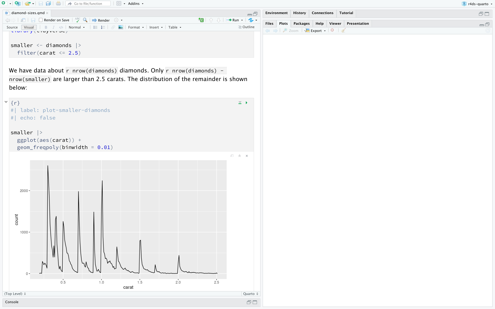
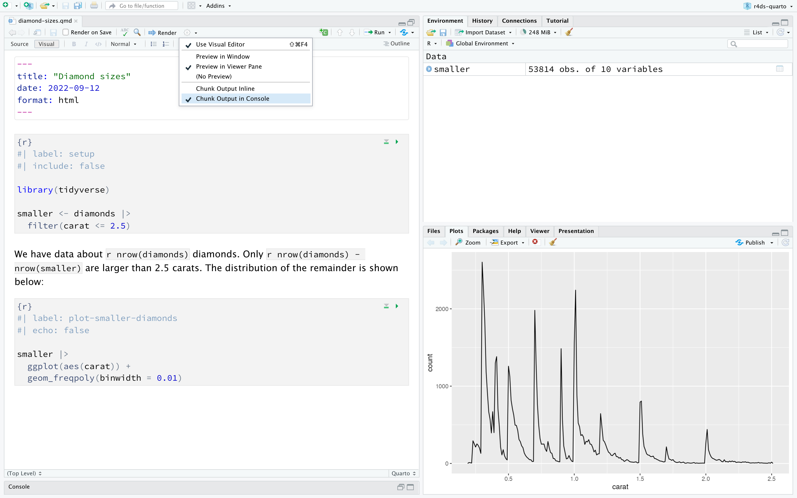

---
title: "Diamond sizes"
date: 2022-09-12
format: html
---
```{r}
#| label: setup
#| include: false
library(tidyverse)
smaller <- diamonds |>
filter(carat <= 2.5)
```
We have data about `r nrow(diamonds)` diamonds.
Only `r nrow(diamonds) - nrow(smaller)` are larger than 2.5 carats.
The distribution of the remainder is shown below:
```{r}
#| label: plot-smaller-diamonds
#| echo: false
smaller |>
ggplot(aes(x = carat)) +
geom_freqpoly(binwidth = 0.01)
```28 Quarto
28.1 引言
Quarto 为数据科学提供了一个统一的创作框架，它将你的代码、代码的运行结果以及你的文字说明整合在一起。Quarto 文档是完全可复现的，并支持数十种输出格式，如 PDF、Word 文件、演示文稿等。
Quarto 文件旨在以三种方式使用：
用于与决策者沟通，他们希望关注结论，而不是分析背后的代码。
用于与其他数据科学家（包括未来的你！）协作，他们既对你的结论感兴趣，也对你如何得出结论（即代码）感兴趣。
作为一种从事数据科学的环境，如同现代的实验笔记，你不仅可以记录你做了什么，还可以记录你的所思所想。
Quarto 是一个命令行界面工具，而不是一个 R 包。这意味着，总的来说，你无法通过 ? 来获取帮助。因此，在本章的学习过程中以及将来使用 Quarto 时，你应该参考 Quarto 文档。
如果你是 R Markdown 用户，你可能会想：“Quarto 听起来很像 R Markdown”。你没说错！Quarto 将 R Markdown 生态系统中的许多包（rmarkdown、bookdown、distill、xaringan 等）的功能统一到一个单一、一致的系统中，并且除了 R 之外，还扩展了对 Python 和 Julia 等多种编程语言的原生支持。从某种意义上说，Quarto 体现了十多年来扩展和支持 R Markdown 生TAI系统所学到的一切。
28.1.1 先决条件
你需要 Quarto 命令行界面 (Quarto CLI)，但你不需要显式地安装或加载它，因为 RStudio 会在需要时自动完成这两项工作。
28.2 Quarto 基础
这是一个 Quarto 文件——一个扩展名为 .qmd 的纯文本文件：
它包含三种重要的内容类型：
- 一个（可选的）由
---包围的 YAML 标头。 - 由
```包围的 R 代码块 (chunks)。 - 混合了简单文本格式的文本，如
# 标题和_斜体_。
Figure 28.1 展示了 RStudio 中一个 .qmd 文档的笔记本界面，其中代码和输出交错显示。你可以通过点击代码块顶部的运行图标（看起来像一个播放按钮），或按 Cmd/Ctrl + Shift + Enter 来运行每个代码块。RStudio 会执行代码并将结果内联显示在代码下方。

如果你不喜欢在文档中看到你的绘图和输出，而更愿意使用 RStudio 的控制台和绘图窗格，你可以点击“Render”旁边的齿轮图标，然后切换到“Chunk Output in Console”，如 Figure 28.2 所示。

要生成包含所有文本、代码和结果的完整报告，请点击“Render”或按 Cmd/Ctrl + Shift + K。你也可以通过 quarto::quarto_render("diamond-sizes.qmd") 以编程方式执行此操作。这将在查看器窗格中显示报告，如 Figure 28.3 所示，并创建一个 HTML 文件。

当你渲染文档时，Quarto 会将 .qmd 文件发送给 knitr，https://yihui.org/knitr/，它会执行所有的代码块，并创建一个新的 markdown (.md) 文档，其中包含代码及其输出。然后，knitr 生成的 markdown 文件由 pandoc，https://pandoc.org 处理，它负责创建最终的文件。这个过程如 Figure 28.4 所示。这种两步工作流的优点是，你可以创建非常广泛的输出格式，你将在 Chapter 29 中了解到这一点。

要开始使用你自己的 .qmd 文件，请在菜单栏中选择 File > New File > Quarto Document…。RStudio 将启动一个向导，你可以用它来预填充你的文件，其中包含有用的内容，提醒你 Quarto 的关键功能是如何工作的。
接下来的部分将更详细地探讨 Quarto 文档的三个组成部分：markdown 文本、代码块和 YAML 标头。
28.2.1 练习
使用 File > New File > Quarto Document 创建一个新的 Quarto 文档。阅读说明。练习单独运行代码块。然后通过点击相应的按钮和使用相应的键盘快捷键来渲染文档。验证你可以修改代码，重新运行它，并看到修改后的输出。
为三种内置格式中的每一种创建一个新的 Quarto 文档：HTML、PDF 和 Word。渲染这三个文档。输出有何不同？输入有何不同？（你可能需要安装 LaTeX 才能构建 PDF 输出——如果需要，RStudio 会提示你。）
28.3 可视化编辑器
RStudio 中的可视化编辑器为创作 Quarto 文档提供了一个 WYSIWYM (所见即所想，What You See Is What You Mean) 界面。在底层，Quarto 文档（.qmd 文件）中的文字是使用 Markdown 编写的，这是一种用于格式化纯文本文件的轻量级约定。事实上，Quarto 使用的是 Pandoc markdown（Quarto 能理解的一种轻微扩展的 Markdown 版本），包括表格、引文、交叉引用、脚注、divs/spans、定义列表、属性、原始 HTML/TeX 等，并且支持执行代码单元格和内联查看其输出。虽然 Markdown 被设计得易于读写，正如你将在 Section 28.4 中看到的那样，它仍然需要学习新的语法。因此，如果你是计算文档（如 .qmd 文件）的新手，但有使用 Google Docs 或 MS Word 等工具的经验，那么在 RStudio 中开始使用 Quarto 的最简单方法就是使用可视化编辑器。
在可视化编辑器中，你可以使用菜单栏上的按钮插入图像、表格、交叉引用等，也可以使用通用的 <kbd>⌘</kbd> + <kbd>/</kbd> 或 <kbd>Ctrl</kbd> + <kbd>/</kbd> 快捷键插入几乎任何东西。如果你在一行的开头（如 Figure 28.5 所示），你也可以只输入 <kbd>/</kbd> 来调用该快捷键。

可视化编辑器也方便了插入图像和自定义其显示方式。你可以直接将剪贴板中的图像粘贴到可视化编辑器中（RStudio 会将该图像的副本放置在项目目录中并链接到它），也可以使用可视化编辑器的“Insert > Figure / Image”菜单浏览到要插入的图像或粘贴其 URL。此外，使用同一菜单，你可以调整图像大小，并添加标题、替代文本和链接。
可视化编辑器还有许多我们在此未列举的功能，随着你创作经验的增加，你可能会发现它们很有用。
最重要的是，虽然可视化编辑器以格式化的方式显示你的内容，但在底层，它以纯 Markdown 的形式保存你的内容，你可以在可视化编辑器和源代码编辑器之间来回切换，使用任一工具查看和编辑你的内容。
28.3.1 练习
- 使用可视化编辑器重新创建 Figure 28.5 中的文档。
- 使用可视化编辑器，通过“Insert”菜单和“插入任何内容”工具插入一个代码块。
- 使用可视化编辑器，找出如何：
- 添加脚注。
- 添加水平线。
- 添加块引用。
- 在可视化编辑器中，进入“Insert > Citation”，并使用其 DOI (数字对象标识符) 10.21105/joss.01686 插入一篇题为 Welcome to the Tidyverse 的论文的引文。渲染文档并观察引文在文档中的显示方式。你观察到文档的 YAML 有什么变化？
28.4 源代码编辑器
你也可以在没有可视化编辑器辅助的情况下，使用 RStudio 中的源代码编辑器来编辑 Quarto 文档。虽然可视化编辑器对于有使用 Google Docs 等工具写作经验的人来说会感到熟悉，但源代码编辑器对于有编写 R 脚本或 R Markdown 文档经验的人来说会感到熟悉。源代码编辑器对于调试任何 Quarto 语法错误也很有用，因为在纯文本中更容易发现这些错误。
以下指南展示了如何在源代码编辑器中使用 Pandoc 的 Markdown 来创作 Quarto 文档。
## Text formatting
*italic* **bold** ~~strikeout~~ `code`
superscript^2^ subscript~2~
[underline]{.underline} [small caps]{.smallcaps}
## Headings
# 1st Level Header
## 2nd Level Header
### 3rd Level Header
## Lists
- Bulleted list item 1
- Item 2
- Item 2a
- Item 2b
1. Numbered list item 1
2. Item 2.
The numbers are incremented automatically in the output.
## Links and images
<http://example.com>
[linked phrase](http://example.com)
{fig-alt="Quarto logo and the word quarto spelled in small case letters"}
## Tables
| First Header | Second Header |
|--------------|---------------|
| Content Cell | Content Cell |
| Content Cell | Content Cell |学习这些语法的最好方法就是亲手尝试。这可能需要几天时间，但很快它们就会成为你的第二天性，你将不再需要刻意去想它们。如果你忘记了，可以通过 Help > Markdown Quick Reference 打开一个方便的参考表。
28.4.1 练习
练习你所学的知识，创建一份简短的简历。标题应该是你的名字，并且你应该包含（至少）教育或工作经历的标题。每个部分都应该包含一个职位/学位的项目符号列表。用粗体突出显示年份。
-
使用源代码编辑器和 Markdown 快速参考，找出如何：
- 添加脚注。
- 添加水平线。
- 添加块引用。
从 https://github.com/hadley/r4ds/tree/main/quarto 复制
diamond-sizes.qmd的内容并粘贴到本地的 R Quarto 文档中。检查你是否可以运行它，然后在频率多边形图后添加文本，描述其最显著的特征。在 Google Doc 或 MS Word 中创建一个文档（或找到一个你以前创建的文档），其中包含一些内容，如标题、超链接、格式化文本等。复制此文档的内容并将其粘贴到可视化编辑器的 Quarto 文档中。然后，切换到源代码编辑器并检查源代码。
28.5 代码块
要在 Quarto 文档中运行代码，你需要插入一个代码块。有三种方法可以做到这一点：
键盘快捷键 Cmd + Option + I / Ctrl + Alt + I。
编辑器工具栏中的“Insert”按钮图标。
手动输入代码块分隔符
```{r}和```。
我们建议你学习键盘快捷键。从长远来看，它会为你节省大量时间！
你可以继续使用你现在（我们希望！）已经熟知并喜爱的键盘快捷键来运行代码：Cmd/Ctrl + Enter。然而，代码块有了一个新的键盘快捷键：Cmd/Ctrl + Shift + Enter，它会运行代码块中的所有代码。把代码块想象成一个函数。一个代码块应该是相对独立的，并专注于一个单一的任务。
接下来的部分描述了代码块标头，它由 ```{r} 组成，后面可以跟一个可选的代码块标签和各种其他的代码块选项，每个选项都在新的一行，并以 #| 开头。
28.5.1 代码块标签
代码块可以有一个可选的标签，例如：
```{r}
#| label: simple-addition
1 + 1
```#> [1] 2这有三个优点：
你可以使用脚本编辑器左下角的下拉代码导航器更轻松地导航到特定的代码块：
#| echo: false #| out-width: “30%” #| fig-alt: | #| RStudio IDE 的片段，仅显示下拉代码导航器， #| 其中显示了三个代码块。代码块 1 是 setup。代码块 2 是 cars， #| 它在一个名为 Quarto 的部分中。代码块 3 是 pressure， #| 它在一个名为“包含绘图”的部分中。 knitr::include_graphics(“screenshots/quarto-chunk-nav.png”) ```
由代码块生成的图形将具有有意义的名称，这使得它们在其他地方更容易使用。更多相关内容见 Section 28.6。
你可以建立缓存代码块的网络，以避免每次运行时都重新执行耗时的计算。更多相关内容见 Section 28.8。
你的代码块标签应该简短但具有描述性，并且不应包含空格。我们建议使用破折号 (-) 来分隔单词（而不是下划线 _），并避免在代码块标签中使用其他特殊字符。
你通常可以自由地为你的代码块命名，但有一个代码块名称具有特殊行为：setup。当你在笔记模式下时，名为 setup 的代码块将在运行任何其他代码之前自动运行一次。
此外，代码块标签不能重复。每个代码块标签必须是唯一的。
28.5.2 代码块选项
代码块的输出可以通过选项进行定制，这些选项是提供给代码块标头的字段。Knitr 提供了近 60 个选项，你可以用它们来定制你的代码块。在这里，我们将介绍你将频繁使用的最重要的代码块选项。你可以在 https://yihui.org/knitr/options 查看完整列表。
最重要的一组选项控制你的代码块是否被执行，以及哪些结果会插入到最终的报告中：
eval: false阻止代码被执行。（显然，如果代码不运行，就不会生成任何结果）。这对于显示示例代码，或者在不注释掉每一行的情况下禁用一大块代码很有用。include: false运行代码，但不在最终文档中显示代码或结果。可用于你不想让报告变得杂乱的设置代码。echo: false阻止代码（而不是结果）出现在最终文件中。当编写面向不希望看到底层 R 代码的人的报告时，请使用此选项。message: false或warning: false阻止消息或警告出现在最终文件中。results: hide隐藏打印输出；fig-show: hide隐藏绘图。error: true即使代码返回错误，也会让渲染继续进行。这很少是你想要包含在报告最终版本中的东西，但如果你需要精确调试.qmd文件内部发生了什么，它可能非常有用。如果你正在教 R 并且想故意包含一个错误，它也很有用。默认值error: false会在文档中出现单个错误时导致渲染失败。
这些代码块选项中的每一个都被添加到代码块的标头中，跟在 #| 之后。例如，在下面的代码块中，结果不会被打印，因为 eval 被设置为 false。
```{r}
#| label: simple-multiplication
#| eval: false
2 * 2
```下表总结了每个选项抑制了哪些类型的输出：
| 选项 | 运行代码 | 显示代码 | 输出 | 绘图 | 消息 | 警告 |
|---|---|---|---|---|---|---|
eval: false |
X | X | X | X | X | |
include: false |
X | X | X | X | X | |
echo: false |
X | |||||
results: hide |
X | |||||
fig-show: hide |
X | |||||
message: false |
X | |||||
warning: false |
X |
28.5.3 全局选项
随着你更多地使用 knitr，你会发现一些默认的代码块选项不符合你的需求，你想要更改它们。
你可以在文档的 YAML 中，在 execute 下添加你偏好的选项来做到这一点。例如，如果你正在为一群不需要看到你的代码，只需要你的结果和叙述的观众准备报告，你可以在文档级别设置 echo: false。这将默认隐藏代码，因此只显示你特意选择显示的代码块（使用 echo: true）。你可能会考虑设置 message: false 和 warning: false，但这会使调试问题变得更加困难，因为你在最终文档中看不到任何消息。
title: "我的报告"
execute:
echo: false由于 Quarto 被设计为多语言的（可与 R 以及 Python、Julia 等其他语言一起工作），所以并非所有的 knitr 选项都在文档执行级别可用，因为其中一些只适用于 knitr，而不适用于 Quarto 用于在其他语言中运行代码的其他引擎（例如 Jupyter）。然而，你仍然可以在 knitr 字段下的 opts_chunk 中将它们设置为文档的全局选项。例如，在编写书籍和教程时，我们设置：
title: "教程"
knitr:
opts_chunk:
comment: "#>"
collapse: true这使用了我们偏好的注释格式，并确保代码和输出紧密地结合在一起。
28.5.4 内联代码
还有另一种将 R 代码嵌入到 Quarto 文档中的方法：直接嵌入文本中，使用：`r `。如果你在文本中提到数据的属性，这会非常有用。例如，本章开头使用的示例文档中有：
我们有关于
`r nrow(diamonds)`颗钻石的数据。 只有`r nrow(diamonds) - nrow(smaller)`颗钻石大于 2.5 克拉。 剩余部分的分布如下所示：
当报告被渲染时，这些计算的结果会被插入到文本中：
我们有关于 53940 颗钻石的数据。 只有 126 颗钻石大于 2.5 克拉。 剩余部分的分布如下所示：
在文本中插入数字时，format() 是你的好帮手。它允许你设置 digits 的数量，这样你就不会打印出精度高到离谱的数字，还可以设置 big.mark 使数字更容易阅读。你可能会将这些组合成一个辅助函数：
comma <- function(x) format(x, digits = 2, big.mark = ",")
comma(3452345)
#> [1] "3,452,345"
comma(.12358124331)
#> [1] "0.12"28.5.5 练习
添加一个部分，探讨钻石大小如何随切工、颜色和净度而变化。假设你正在为不懂 R 的人写报告，并且不要在每个代码块上设置
echo: false，而是设置一个全局选项。从 https://github.com/hadley/r4ds/tree/main/quarto 下载
diamond-sizes.qmd。添加一个描述最大的 20 颗钻石的部分，包括一个显示它们最重要属性的表格。修改
diamonds-sizes.qmd以使用label_comma()来生成格式精美的输出。同时，也包括大于 2.5 克拉的钻石的百分比。
28.6 图形
Quarto 文档中的图形可以是被嵌入的（例如，一个 PNG 或 JPEG 文件），也可以是代码块运行的结果。
要嵌入一个外部文件中的图像，你可以在 RStudio 的可视化编辑器中使用“Insert”菜单，然后选择“Figure / Image”。这将弹出一个菜单，你可以在其中浏览到你想要插入的图像，并为其添加替代文本或标题，以及调整其大小。在可视化编辑器中，你也可以简单地将剪贴板中的图像粘贴到你的文档中，RStudio 会将该图像的副本放置在你的项目文件夹中。
如果你包含一个生成图形的代码块（例如，包含一个 ggplot() 调用），生成的图形将自动包含在你的 Quarto 文档中。
28.6.1 图形尺寸
在 Quarto 中，图形最大的挑战是让你的图形获得正确的尺寸和形状。有五个主要的选项控制图形尺寸：fig-width、fig-height、fig-asp、out-width 和 out-height。图像尺寸之所以具有挑战性，是因为有两个尺寸（R 创建的图形的尺寸和它在输出文档中插入的尺寸），并且有多种指定尺寸的方式（即高度、宽度和纵横比：三选二）。
我们推荐使用这五个选项中的三个：
如果图形具有一致的宽度，它们往往在美学上更令人愉悦。为了实现这一点，请在默认设置中设置
fig-width: 6（6英寸）和fig-asp: 0.618（黄金比例）。然后在单个代码块中，只调整fig-asp。-
使用
out-width控制输出尺寸，并将其设置为输出文档正文宽度的百分比。我们建议out-width: "70%"和fig-align: center。这给绘图留出了呼吸的空间，而不会占用太多空间。
要将多个绘图放在一行中，请为两个绘图设置
layout-ncol为 2，为三个绘图设置layout-ncol为 3，依此类推。如果layout-ncol是 2，这实际上会将每个绘图的out-width设置为 “50%”；如果layout-ncol是 3，则为 “33%”，依此类推。根据你试图说明的内容（例如，显示数据或显示绘图变体），你可能还需要调整fig-width，如下所述。
如果你发现你需要眯着眼睛才能看清绘图中的文字，你需要调整 fig-width。如果 fig-width 大于图形在最终文档中渲染的尺寸，文字就会太小；如果 fig-width 小于最终尺寸，文字就会太大。你通常需要做一些实验来找出 fig-width 和文档中最终宽度之间的正确比例。为了说明这个原理，下面三个绘图的 fig-width 分别是 4、6 和 8：

如果你想确保所有图形的字体大小都一致，那么每当你设置 out-width 时，你都需要调整 fig-width 以保持与你的默认 out-width 相同的比例。例如，如果你的默认 fig-width 是 6，out-width 是 “70%”，那么当你设置 out-width: "50%" 时，你需要将 fig-width 设置为 4.3 (6 * 0.5 / 0.7)。
图形尺寸和缩放是一门艺术和科学，要做到恰到好处可能需要一个迭代的试错过程。你可以在 这篇关于控制绘图缩放的博客文章 中了解更多关于图形尺寸的信息。
28.6.2 其他重要选项
当像本书这样将代码和文本混合在一起时，你可以设置 fig-show: hold，这样绘图就会在代码之后显示。这有一个令人愉悦的副作用，即迫使你用解释来打断大段的代码。
要为绘图添加标题，请使用 fig-cap。在 Quarto 中，这会将图形从内联变为“浮动”。
如果你正在生成 PDF 输出，默认的图形类型是 PDF。这是一个很好的默认设置，因为 PDF 是高质量的矢量图形。但是，如果你要显示数千个点，它们可能会产生非常大且速度慢的绘图。在这种情况下，设置 fig-format: "png" 来强制使用 PNG。它们的质量稍低，但会紧凑得多。
给生成图形的代码块命名是一个好主意，即使你不常给其他代码块加标签。代码块标签用于生成磁盘上图形的文件名，所以给你的代码块命名可以让你更容易地挑选出绘图并在其他情况下重用（例如，如果你想快速地将单个绘图放入一封电子邮件中）。
28.6.3 练习
- 在可视化编辑器中打开
diamond-sizes.qmd，找到一张钻石的图片，复制它，然后粘贴到文档中。双击图片并添加一个标题。调整图片大小并渲染你的文档。观察图片是如何保存在你当前的工作目录中的。 - 编辑
diamond-sizes.qmd中生成绘图的代码块的标签，使其以前缀fig-开头，并使用代码块选项fig-cap为图形添加一个标题。然后，编辑代码块上方的文本，使用“Insert > Cross Reference”添加对该图形的交叉引用。 - 使用以下代码块选项更改图形的大小，一次一个，渲染你的文档，并描述图形是如何变化的。
fig-width: 10fig-height: 3out-width: "100%"out-width: "20%"
28.7 表格
与图形类似，你可以在 Quarto 文档中包含两种类型的表格。它们可以是你直接在 Quarto 文档中创建的 markdown 表格（使用“Insert Table”菜单），也可以是代码块运行结果生成的表格。在本节中，我们将重点关注后者，即通过计算生成的表格。
默认情况下，Quarto 会像你在控制台中看到的那样打印数据框和矩阵：
mtcars[1:5, ]
#> mpg cyl disp hp drat wt qsec vs am gear carb
#> Mazda RX4 21.0 6 160 110 3.90 2.620 16.46 0 1 4 4
#> Mazda RX4 Wag 21.0 6 160 110 3.90 2.875 17.02 0 1 4 4
#> Datsun 710 22.8 4 108 93 3.85 2.320 18.61 1 1 4 1
#> Hornet 4 Drive 21.4 6 258 110 3.08 3.215 19.44 1 0 3 1
#> Hornet Sportabout 18.7 8 360 175 3.15 3.440 17.02 0 0 3 2如果你希望数据以附加格式显示，可以使用 knitr::kable() 函数。下面的代码生成了 Table 28.1。
knitr::kable(mtcars[1:5, ], )| mpg | cyl | disp | hp | drat | wt | qsec | vs | am | gear | carb | |
|---|---|---|---|---|---|---|---|---|---|---|---|
| Mazda RX4 | 21.0 | 6 | 160 | 110 | 3.90 | 2.620 | 16.46 | 0 | 1 | 4 | 4 |
| Mazda RX4 Wag | 21.0 | 6 | 160 | 110 | 3.90 | 2.875 | 17.02 | 0 | 1 | 4 | 4 |
| Datsun 710 | 22.8 | 4 | 108 | 93 | 3.85 | 2.320 | 18.61 | 1 | 1 | 4 | 1 |
| Hornet 4 Drive | 21.4 | 6 | 258 | 110 | 3.08 | 3.215 | 19.44 | 1 | 0 | 3 | 1 |
| Hornet Sportabout | 18.7 | 8 | 360 | 175 | 3.15 | 3.440 | 17.02 | 0 | 0 | 3 | 2 |
阅读 ?knitr::kable 的文档，了解你可以用来自定义表格的其他方法。如果需要更深度的定制，可以考虑 gt、huxtable、reactable、kableExtra、xtable、stargazer、pander、tables 和 ascii 这些包。它们各自提供了一套从 R 代码返回格式化表格的工具。
28.7.1 练习
- 在可视化编辑器中打开
diamond-sizes.qmd，插入一个代码块，并使用knitr::kable()添加一个表格，显示diamonds数据框的前 5 行。 - 改用
gt::gt()显示同一个表格。 - 添加一个以前缀
tbl-开头的代码块标签，并使用代码块选项tbl-cap为表格添加一个标题。然后，编辑代码块上方的文本，使用“Insert > Cross Reference”添加对该表格的交叉引用。
28.8 缓存
通常情况下，每次渲染文档都是从一个完全干净的环境开始的。这对于可复现性来说非常好，因为它确保了你已经用代码捕捉到了每一个重要的计算。然而，如果你有一些计算需要很长时间，这可能会很痛苦。解决方案是 cache: true。
你可以在文档级别启用 Knitr 缓存，以缓存文档中所有计算的结果，使用标准的 YAML 选项：
---
title: "我的文档"
execute:
cache: true
---你也可以在代码块级别启用缓存，以缓存特定代码块中计算的结果：
```{r}
#| cache: true
# 耗时计算的代码...
```设置后，这会将代码块的输出保存到磁盘上一个特殊命名的文件中。在后续运行中，knitr 会检查代码是否已更改，如果未更改，它将重用缓存的结果。
缓存系统必须谨慎使用，因为默认情况下它只基于代码本身，而不是其依赖项。例如，在这里 processed_data 代码块依赖于 raw-data 代码块：
```{r}
#| label: raw-data
#| cache: true
rawdata <- readr::read_csv("一个_非常_大的_文件.csv")
``````{r}
#| label: processed_data
#| cache: true
processed_data <- rawdata |>
filter(!is.na(import_var)) |>
mutate(new_variable = complicated_transformation(x, y, z))
```缓存 processed_data 代码块意味着如果 dplyr 管道被更改，它将被重新运行，但如果 read_csv() 调用发生更改，它将不会被重新运行。你可以使用 dependson 代码块选项来避免这个问题：
```{r}
#| label: processed-data
#| cache: true
#| dependson: "raw-data"
processed_data <- rawdata |>
filter(!is.na(import_var)) |>
mutate(new_variable = complicated_transformation(x, y, z))
```dependson 应该包含一个字符向量，其中包含被缓存的代码块所依赖的每一个代码块。每当 knitr 检测到其依赖项之一发生更改时，它就会更新被缓存代码块的结果。
请注意，如果 a_very_large_file.csv 发生更改，代码块将不会更新，因为 knitr 缓存只跟踪 .qmd 文件内部的更改。如果你还想跟踪该文件的更改，可以使用 cache.extra 选项。这是一个任意的 R 表达式，当它发生更改时将使缓存失效。一个好用的函数是 file.mtime()：它返回文件的最后修改时间。然后你可以这样写：
```{r}
#| label: raw-data
#| cache: true
#| cache.extra: !expr file.mtime("a_very_large_file.csv")
rawdata <- readr::read_csv("a_very_large_file.csv")
```我们采纳了 David Robinson 的建议来命名这些代码块：每个代码块都以它创建的主要对象命名。这使得理解 dependson 规范变得更容易。
随着你的缓存策略变得越来越复杂，定期使用 knitr::clean_cache() 清除所有缓存是一个好主意。
28.8.1 练习
- 建立一个代码块网络，其中
d依赖于c和b，而b和c都依赖于a。让每个代码块打印lubridate::now()，设置cache: true，然后验证你对缓存的理解。
28.9 故障排除
对 Quarto 文档进行故障排除可能具有挑战性，因为你不再处于交互式的 R 环境中，你需要学习一些新技巧。此外，错误可能是由于 Quarto 文档本身的问题，也可能是由于 Quarto 文档中的 R 代码问题。
在带有代码块的文档中，一个常见的错误是重复的代码块标签，如果你的工作流程涉及复制和粘贴代码块，这种情况尤其普遍。要解决此问题，你只需更改其中一个重复的标签即可。
如果错误是由于文档中的 R 代码引起的，你应该首先尝试在交互式会话中重现问题。重启 R，然后“Run all chunks”（运行所有代码块），可以从“Code”菜单下的“Run region”中选择，也可以使用键盘快捷键 Ctrl + Alt + R。如果幸运的话，这会重现问题，你就可以在交互式环境中找出问题所在。
如果这没有帮助，那么你的交互式环境和 Quarto 环境之间一定存在某些差异。你将需要系统地探索这些选项。最常见的差异是工作目录：Quarto 的工作目录是它所在的目录。通过在代码块中包含 getwd() 来检查工作目录是否如你所料。
接下来，集思广益，想出所有可能导致该错误的因素。你需要系统地检查它们在你的 R 会话和你的 Quarto 会话中是否相同。最简单的方法是在导致问题的代码块上设置 error: true，然后使用 print() 和 str() 来检查设置是否如你所料。
28.10 YAML 标头
你可以通过调整 YAML 标头的参数来控制许多其他“整个文档”的设置。你可能想知道 YAML 代表什么：它是 “YAML Ain’t Markup Language”（YAML 不是一种标记语言），旨在以一种易于人类读写的方式表示分层数据。Quarto 用它来控制输出的许多细节。在这里，我们将讨论三个方面：自包含文档、文档参数和参考文献。
28.10.1 自包含
HTML 文档通常有许多外部依赖项（例如，图像、CSS 样式表、JavaScript 等），默认情况下，Quarto 会将这些依赖项放在与你的 .qmd 文件同目录下的一个 _files 文件夹中。如果你将 HTML 文件发布到托管平台（例如，QuartoPub，https://quartopub.com/），这个目录中的依赖项会与你的文档一起发布，因此在已发布的报告中可用。但是，如果你想通过电子邮件将报告发送给同事，你可能更喜欢一个单一的、自包含的 HTML 文档，它嵌入了所有的依赖项。你可以通过指定 embed-resources 选项来做到这一点：
format:
html:
embed-resources: true生成的文件将是自包含的，因此它不需要任何外部文件，也不需要互联网访问即可由浏览器正确显示。
28.10.2 参数
Quarto 文档可以包含一个或多个参数，其值可以在你渲染报告时设置。当你希望用不同的关键输入值重新渲染同一份报告时，参数非常有用。例如，你可能需要按分公司生成销售报告、按学生生成考试成绩，或者按国家生成人口统计摘要。要声明一个或多个参数，请使用 params 字段。
这个例子使用一个 my_class 参数来决定显示哪一类汽车：
---
format: html
params:
my_class: "suv"
---
```{r}
#| label: setup
#| include: false
library(tidyverse)
class <- mpg |> filter(class == params$my_class)
```
# Fuel economy for `r params$my_class`s
```{r}
#| message: false
ggplot(class, aes(x = displ, y = hwy)) +
geom_point() +
geom_smooth(se = FALSE)
```如你所见，参数在代码块中作为一个名为 params 的只读列表可用。
你可以将原子向量直接写入 YAML 标头。你也可以通过在参数值前加上 !expr 来运行任意 R 表达式。这是指定日期/时间参数的好方法。
params:
start: !expr lubridate::ymd("2015-01-01")
snapshot: !expr lubridate::ymd_hms("2015-01-01 12:30:00")28.10.3 参考文献和引文
Quarto 可以自动生成多种样式的引文和参考文献。在 Quarto 文档中添加引文和参考文献最直接的方法是使用 RStudio 中的可视化编辑器。
要使用可视化编辑器添加引文，请转到“Insert > Citation”。可以从多种来源插入引文：
在底层，可视化模式使用标准的 Pandoc markdown 表示法来表示引文（例如，[@citation]）。
如果你使用前三种方法之一添加引文，可视化编辑器将自动为你创建一个 bibliography.bib 文件，并将参考文献添加到其中。它还会在文档的 YAML 中添加一个 bibliography 字段。随着你添加更多的参考文献，这个文件将被它们的引文填充。你也可以直接使用许多常见的参考文献格式编辑此文件，包括 BibLaTeX、BibTeX、EndNote、Medline。
要在源代码编辑器中的 .qmd 文件内创建引文，请使用由 ‘@’ + 参考文献文件中的引文标识符组成的键。然后将引文放在方括号内。以下是一些示例：
用分号分隔多个引文：Blah blah [@smith04; @doe99]。
你可以在方括号内添加任意注释：
Blah blah [参见 @doe99, pp. 33-35; 以及 @smith04, ch. 1]。
去掉方括号以创建文内引文：@smith04
说 blah，或者 @smith04 [p. 33] 说 blah。
在引文前添加一个 `-` 来抑制作者的名字：
Smith 说 blah [-@smith04]。当 Quarto 渲染你的文件时，它将在你的文档末尾构建并附加一个参考文献列表。该参考文献列表将包含你的参考文献文件中的每一个被引用的参考文献，但它不会包含一个章节标题。因此，通常的做法是在你的文件末尾为参考文献添加一个章节标题，例如 # 参考文献 或 # Bibliography。
你可以通过在 csl 字段中引用一个 CSL (citation style language) 文件来更改你的引文和参考文献的样式：
bibliography: rmarkdown.bib
csl: apa.csl与 bibliography 字段一样，你的 csl 文件应包含文件的路径。这里我们假设 csl 文件与 .qmd 文件在同一个目录中。一个寻找常见参考文献样式 CSL 文件的好地方是 https://github.com/citation-style-language/styles。
28.11 工作流
早些时候，我们讨论了捕获 R 代码的基本工作流，即你在控制台中交互式地工作，然后在脚本编辑器中捕获有效的内容。Quarto 将控制台和脚本编辑器结合在一起，模糊了交互式探索和长期代码捕获之间的界限。你可以在一个代码块内快速迭代，用 Cmd/Ctrl + Shift + Enter 编辑和重新执行。当你满意时，你就可以继续前进，开始一个新的代码块。
Quarto 之所以重要，还因为它将文字和代码如此紧密地集成在一起。这使它成为一个很棒的分析笔记，因为它让你能够开发代码并记录你的想法。分析笔记与物理科学中的经典实验笔记有许多相同的目标。它：
记录你做了什么以及为什么这么做。无论你的记忆力有多好，如果你不记录你所做的事情，总有一天你会忘记重要的细节。把它们写下来，这样你就不会忘记！
支持严谨的思考。如果你边做边记录你的想法，并持续反思它们，你更有可能得出一个强有力的分析。当最终你写下你的分析与他人分享时，这也为你节省了时间。
帮助他人理解你的工作。独自进行数据分析的情况很少，你通常会作为一个团队的一部分工作。实验笔记可以帮助你不仅分享你做了什么，还分享你为什么这么做给你的同事或实验室伙伴。
许多关于有效使用实验笔记的好建议也可以转化为分析笔记。我们借鉴了自己的经验和 Colin Purrington 关于实验笔记的建议 (https://colinpurrington.com/tips/lab-notebooks)，总结出以下几点提示：
确保每个笔记都有一个描述性的标题，一个引人入胜的文件名，以及一个简要描述分析目标的第一段。
-
使用 YAML 标头的日期字段来记录你开始写笔记的日期：
date: 2016-08-23使用 ISO8601 YYYY-MM-DD 格式，这样就不会有歧义。即使你通常不这样写日期，也要使用它！
如果你在一个分析想法上花费了大量时间，结果却发现是个死胡同，不要删除它！写一个简短的说明，说明它为什么失败，并把它留在笔记里。这会帮助你在将来回到这个分析时避免重蹈覆辙。
一般来说，你最好在 R 之外进行数据录入。但如果你确实需要记录一小段数据，请使用
tibble::tribble()清晰地把它列出来。如果你在一个数据文件中发现错误，永远不要直接修改它，而是编写代码来纠正这个值。并解释你为什么要做这个修正。
在一天结束之前，确保你能渲染这个笔记。如果你在使用缓存，确保清除缓存。这将让你在代码还记忆犹新的时候修复任何问题。
如果你希望你的代码长期可复现（即你可以在下个月或明年回来运行它），你需要跟踪你的代码使用的包的版本。一个严谨的方法是使用 renv，https://rstudio.github.io/renv/index.html，它将包存储在你的项目目录中。一个快速而粗略的技巧是包含一个运行
sessionInfo()的代码块——这不能让你轻松地重现你今天的包，但至少你会知道它们曾经是什么样的。在你的职业生涯中，你将会创建非常非常多的分析笔记。你将如何组织它们，以便将来能再次找到它们？我们建议将它们存储在各自的项目中，并想出一个好的命名方案。
28.12 总结
在本章中，我们向你介绍了 Quarto，这是一个用于创作和发布可复现计算文档的工具，它将你的代码和文字说明整合在一处。你学习了如何在 RStudio 中使用可视化或源代码编辑器编写 Quarto 文档，代码块如何工作以及如何为它们自定义选项，如何在你的 Quarto 文档中包含图形和表格，以及为计算进行缓存的选项。此外，你还学习了如何调整 YAML 标头选项来创建自包含或参数化的文档，以及如何包含引文和参考文献。我们还为你提供了一些故障排除和工作流的技巧。
虽然这个介绍应该足以让你开始使用 Quarto，但仍有许多东西需要学习。Quarto 还相对年轻，并且仍在快速发展。了解其创新的最佳去处是 Quarto 的官方网站：https://quarto.org。
我们在这里没有涉及两个重要的主题：协作以及如何准确地将你的想法传达给其他人的细节。协作是现代数据科学的重要组成部分，通过使用像 Git 和 GitHub 这样的版本控制工具，你可以让你的生活轻松得多。我们推荐由 Jenny Bryan 编写的 “Happy Git with R”，这是一本面向 R 用户的 Git 和 GitHub 用户友好入门读物。该书可在线免费获取：https://happygitwithr.com。
我们也没有谈及为了清晰地传达你的分析结果，你到底应该写些什么。为了提高你的写作水平，我们强烈推荐阅读 Joseph M. Williams & Joseph Bizup 的 Style: Lessons in Clarity and Grace 或 George Gopen 的 The Sense of Structure: Writing from the Reader’s Perspective。这两本书都将帮助你理解句子和段落的结构，并为你提供使你的写作更清晰的工具。（这些书如果买新的会相当昂贵，但许多英语课程都在使用它们，所以有很多便宜的二手书）。George Gopen 也在 https://www.georgegopen.com/litigation-articles.html 上发表了一些关于写作的短文。它们是针对律师的，但几乎所有内容也同样适用于数据科学家。